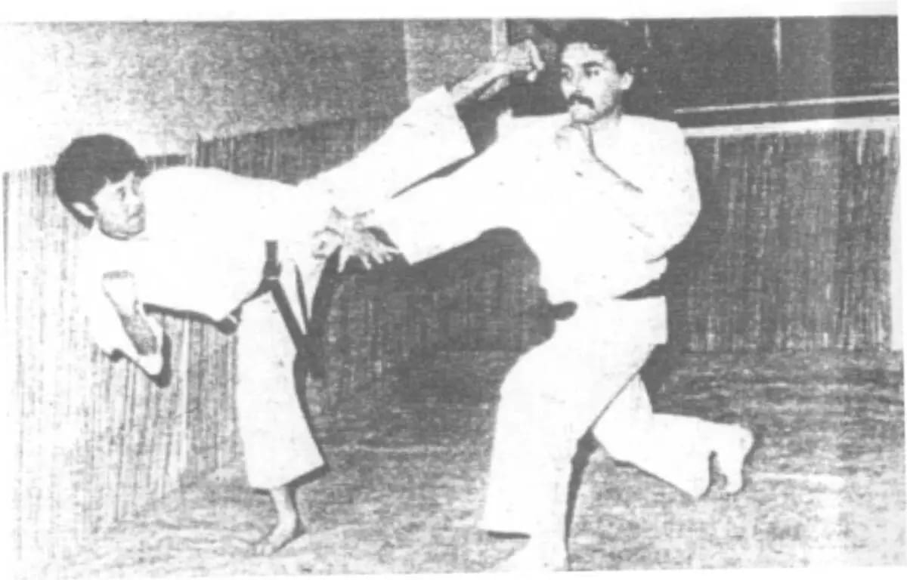
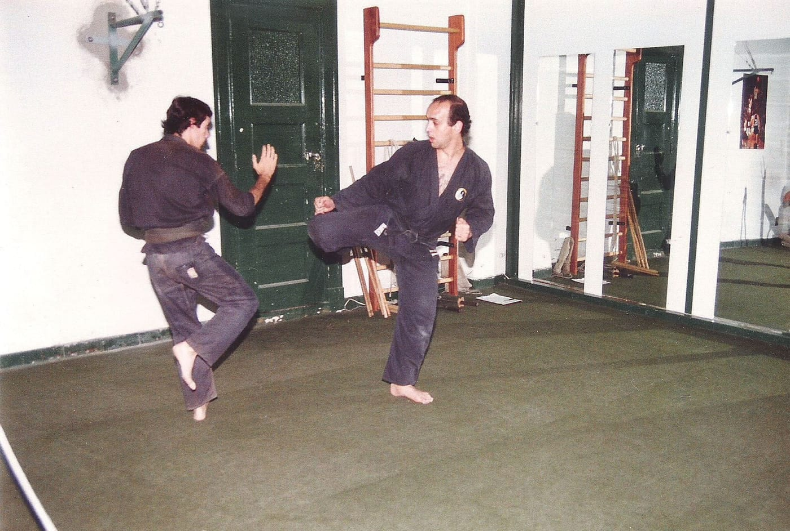
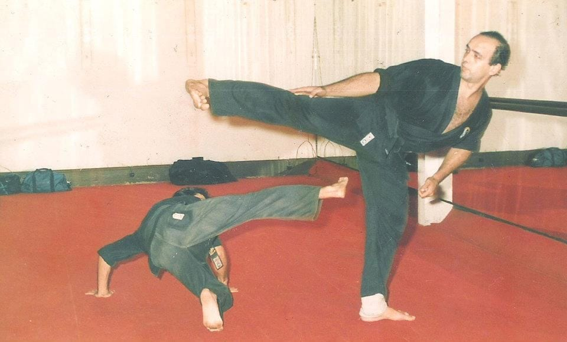
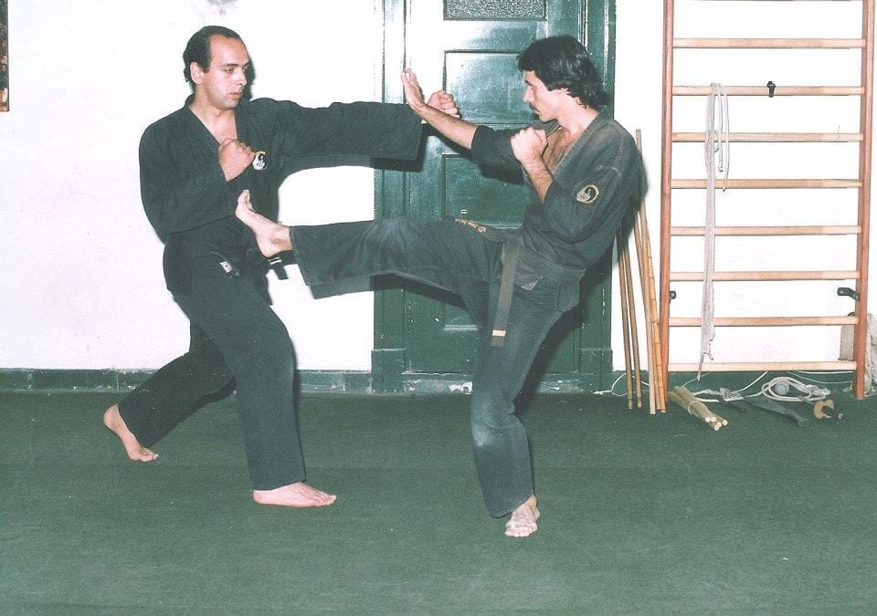
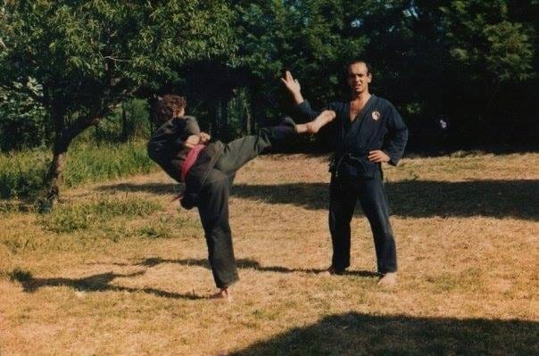
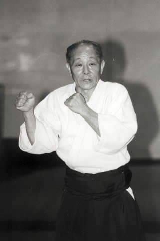

La Escuela
Historia
Cómo llegó el Kenpo a la Argentina y de qué maestros viene lo que enseñamos.
El origen
De Oriente al Río de la Plata
Según la tradición, el origen está en la India, donde la casta guerrera tenía su propio método de combate. Esas formas pasaron a China y allá se desarrollaron durante siglos con el nombre de chuan fa, «la ley armónica de los puños».
Se suele hablar de dos grandes ramas. En el norte, más montañoso, se trabajaba la fuerza y la potencia. Al sur del río Yangtsé, donde la gente era de menor talla, las formas se apoyaron más en la movilidad y la agilidad. Nuestro estilo se parece más a esa segunda rama: preferimos salir del ataque antes que chocarlo de frente.
A Japón llegó en distintos momentos, casi siempre con monjes y viajeros. Allá los mismos ideogramas se leyeron kenpo: ken, puño; po, método. O sea, el método del puño.
Lo trajo el Gran Maestro Kenzo Miyazawa, que llegó a la Argentina en los años sesenta con una misión comercial y se quedó. Practicaba desde chico, también kendo y aikido, y al radicarse empezó a enseñar: fue quien introdujo las dos artes en el país. Enseñaba a grupos chicos y formó pocos discípulos, por eso se puede seguir con nombre y apellido quién aprendió de quién.

La línea de enseñanza
Cómo llega hasta nosotros
Entre los discípulos de Miyazawa estuvo el Maestro Gerardo Seijo, que continuó la difusión del estilo en el país. De esa formación surge el Maestro Juan Pablo Manchino, y es ahí donde empieza propiamente nuestra línea.
Manchino formó a quienes hoy conducen Seiren Kenpo: el Maestro Arturo Bales, que lleva adelante la sede de Salta, y Sensei Claudio Abdala, a cargo de Buenos Aires. De la enseñanza de Bales vienen a su vez el Profesor Pablo Miranda Savina y el Instructor Fabricio Giuliani, hoy al frente del grupo de Mendoza.
Por eso en Mendoza, Salta y Buenos Aires se enseña lo mismo: cada uno entrenó años con su maestro antes de ponerse al frente de un grupo.
Iniciamos esta etapa para preservar el contenido técnico recibido y formar nuevas generaciones de practicantes e instructores. Seiren Kenpo




Linaje
El árbol
Quién formó a quién, de Miyazawa hasta hoy.

-
Origen
Gran Maestro Kenzo Miyazawa
Trajo el estilo a la Argentina y formó a las primeras generaciones de practicantes del país.
-
Transmisión
Maestro Gerardo Seijo
Discípulo de Miyazawa, continuó la difusión del estilo.
-
Nuestra línea
Maestro Juan Pablo Manchino
Formó a quienes hoy conducen Seiren Kenpo.
-
Maestro Arturo Bales
7° Dan · Salta-
Profesor Pablo Miranda Savina
4° Dan · Mendoza -
Instructor Fabricio Giuliani
2° Dan · Mendoza
-
-
Sensei Claudio Abdala
6° Dan · Buenos Aires
-